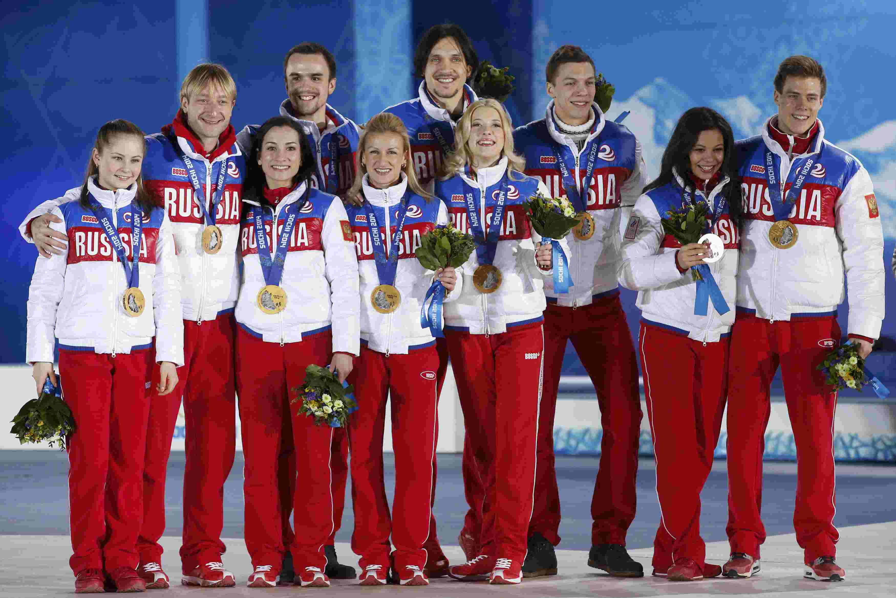

Фигурное катание(командный турнир)
Победители: Евгений Плющенко, Юлия Липницкая, Елена Ильиных/Никита Кацалапов, Татьяна Волосожар/Максим Траньков, Ксения Столбова/Федор Климов, Екатерина Боброва/Дмитрий Соловьев (командный турнир)
Сборная России по фигурному катанию завоевала золото в командном турнире олимпийского турнира, который проводился впервые на Олимпиадах. После восьми видов команда в составе Юлии Липницкой, Евгения Плющенко, дуэтов Татьяны Волосожар и Максима Транькова, Ксении Столбовой и Федора Климова, Екатерины Бобровой и Дмитрия Соловьева, Елены Ильиных и Никиты Кацалапова набрала 75 баллов. Второе место осталось за канадскими фигуристами – 65 баллов, третье – за сборной США с 60 набранными очками.